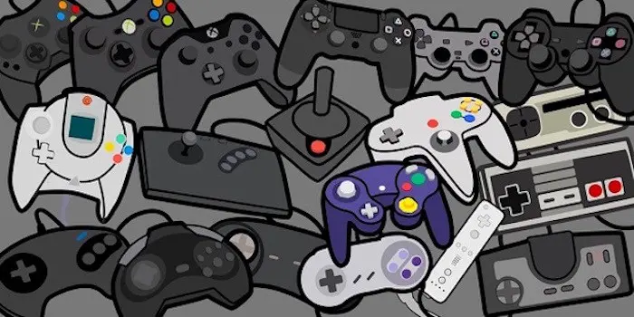
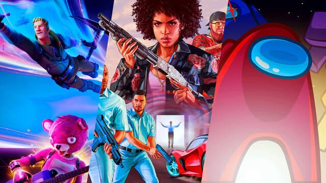

Definición
Un videojuego es una forma de entretenimiento digital donde uno o más jugadores interactúan con una interfaz y controlan personajes o elementos visuales en una pantalla. Se pueden jugar en consolas, computadoras, teléfonos móviles y otros dispositivos.

Historia
Los primeros videojuegos comenzaron en la década de 1950 como experimentos en laboratorios de computación. Sin embargo, no fue hasta 1972, con el lanzamiento de Pong, que los videojuegos comenzaron a ser populares. Desde entonces, la industria ha crecido exponencialmente, alcanzando niveles de complejidad y popularidad impensables hace unas décadas.
Tipos de Videojuegos
Existen una gran variedad de géneros de videojuegos, cada uno enfocado en distintos tipos de experiencias para los jugadores. Algunos de los géneros más populares incluyen:
- Acción: Juegos que requieren reflejos rápidos y que suelen estar llenos de adrenalina.
- Aventura: Juegos con historias ricas donde los jugadores exploran mundos virtuales.
- Estrategia: Juegos que requieren planificación y pensamiento táctico.
- Deportes: Simulaciones de deportes como fútbol, baloncesto o carreras.
- Rol (RPG): Juegos donde los jugadores asumen el rol de personajes y exploran mundos y misiones.
Impacto en la Sociedad
Los videojuegos han influido en la cultura, la educación y la tecnología. Han promovido el desarrollo de habilidades, como la resolución de problemas y la coordinación mano-ojo. Sin embargo, también han generado preocupaciones sobre el tiempo de pantalla y posibles efectos negativos en la salud mental.
Curiosidades
Algunas curiosidades interesantes sobre los videojuegos:
- El juego Super Mario Bros. de Nintendo ha sido uno de los juegos más vendidos de todos los tiempos.
- El primer videojuego conocido es Tennis for Two, creado en 1958 en un osciloscopio.
- La industria de los videojuegos genera más ingresos que el cine y la música juntos.